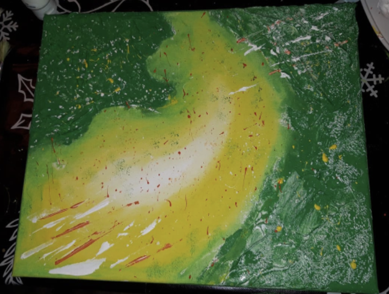
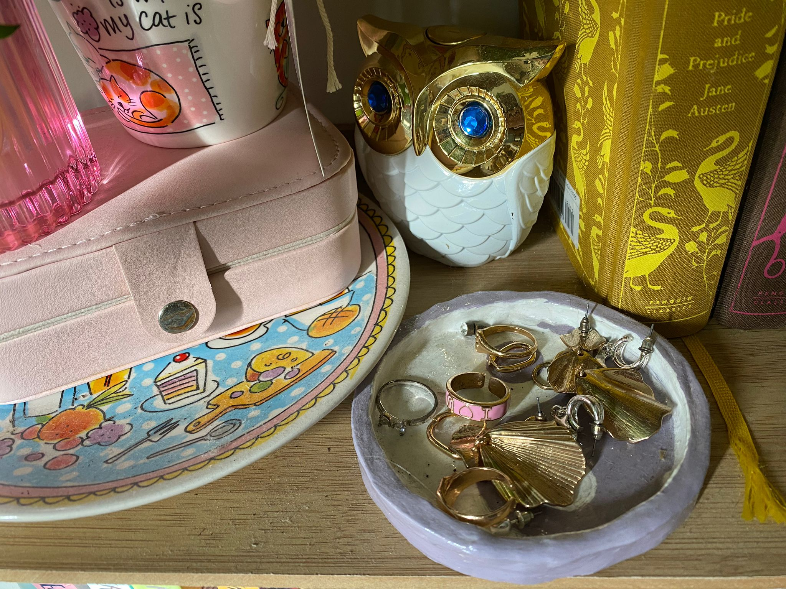
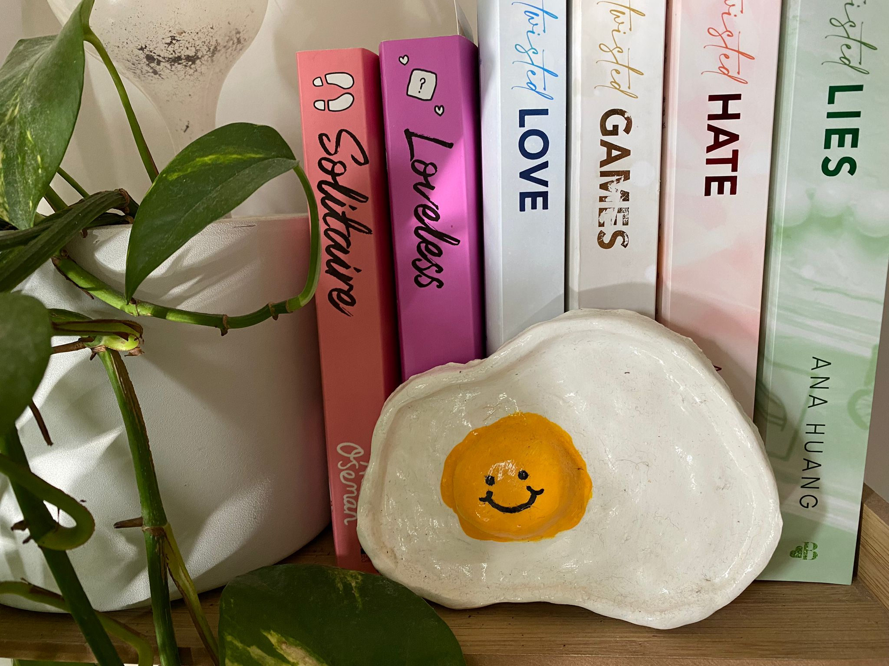
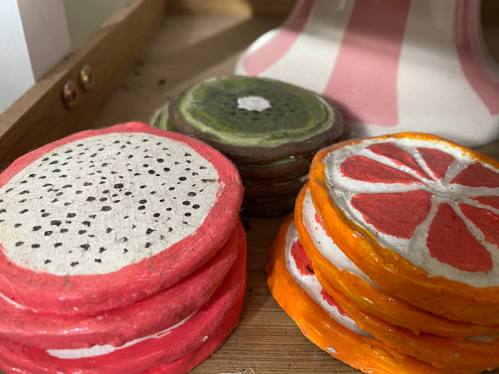
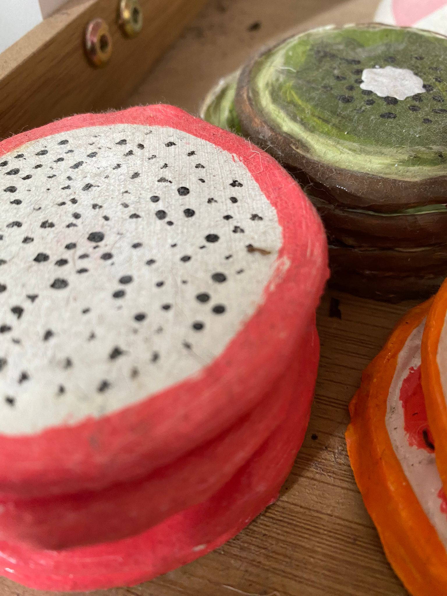
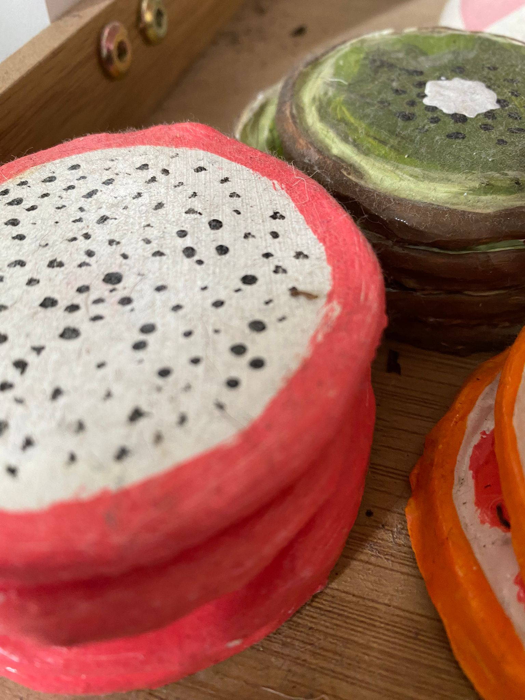

Ander werk
Tekeningen
In mijn vrije tijd houd ik er van om bezig te zijn met schetsen. Mijn favoriete schetst stijl is realistische schetsen. Zo maak ik voral portretten, maar probeer ik ook objecten realistisch te tekenen.
Portretten
Als ik schets vind ik het schetsen van portretten het prettigste om te schetsen, omdat je hier heel snel je groei in schetsen kan zien. Ook vind ik het fijn om mee te oefenen, omdat er veel onderdelen zijn om in te verbeteren.
De bassis die ik neer zet is altijd het zelfde, maar erg belangerijk voor het proces van het maken van een portret schets. Ik begin altijd met een cirkel en bassis lijnen, daarna maak ik de lijnen voor de kaak nek en ooren om de positie van het portret te bepalen. Als laatste voor de basis bepaal ik grof de locatie van de onderdelen van het gezicht, zoals neus, ogen en mond.
Als ik dit hele proces in stappen zou zetten zou het er ongeveer zo uit zien:
- Referentie foto uitzoeken
- Cirkel schetsen (deze bepaald de grote van het portret)
- Basis lijnen schetsen (deze bepalen de richting van het gezicht)
- Kaaklijn schetsen (dit bepaald de vorm van het gezicht)
- Nek en ooren positioneren
- Locatie bepalen van: ogen, wenkbrouwen, neus en mond (zelf begin ik altijd met de neus, omdat deze de afstand tussen ogen en mond bepaald)
- Groffe schets van het haar
- Alles uitwerken in detail

Met de basis kan ik meerdere kanten op. Hier voor verander ik alleen de middenlijn en per gezicht ook de kaak als bassis vorm. Je kunt dit ook zien. Zo heb ik bijvoorbeeld een jongen met een kat getekend, en zelfs hier is de kat ook met deze tegnieken getekend.
Objecten
Het schetsen van objecten helpt mij met het lerenn schetsen van schaduwen en licht val. Met dit oefenen kan ik wederom weer makkelijker portretten schetsen, omdat je nu hebt geleerd hoe je voor jezelf schaduwen en licht er realistisch uit kan laten zien.
Een van mijn betere voorbeelden voor schaduwen en licht val is dit glas water met een lepel. Het glas geeft natuurlijk een schaduw samen met de lepel, maar omdat het water doorzichtig is samen met het glas laat het ook licht door. Door dat het glas en het water licht door laat krijg je in je schaduw weer een aparte licht val op het vlak. Ook is in dit geval door het water verandering van vorm in de lepel, ook hier door kan je goed oefenen met proporties en positionering.
Ook voor de mango en paprika heb ik veel geoefend met lichtval en schaduw, doormiddel van meerdere aanzichten te gebruiken. Als ik dit soort dingen ga schetsen maak ik ook altijd een foto van het object, omdat als ik er mee bezig ben veranderd het licht veel doordat het lang kan duuren. Ook doe ik dit, omdat als ik tussen door wat moet doen dus alles aan de kant leg of zelfs helemaal weg leg, het de volgendekeer als ik er aan verder ga niet meer het zelfde uit ziet als waar ik mee begonnen was. Dus zelf een referentie beeld maken is zeker een aan rader.
Pen tekeningen
Wat ik ook fijn vind om te schetsen is pen tekeningen. Door het schetsen met een pen kan je natuurlijk niks uitgummen, waardoor je goed je stappen kan zien en bijhouden.
Cartoons
Met deze pen tekeningen maak ik ook graag kleine caraktertjes, omdat dit een soort school book feeling geeft wat ik er zelf heel erg leuk uit vind zien. Dit doe ik ook voornamelijk het liefste gewoon tussen door als ik bijvoorbeeld lang moet wachten op dingen.
Schilderijen
Ook vind ik schilderen erg leuk om te doen. Met schilderen ben ik erg tegenovergesteld in hoe ik schets, want ik hou met schilderen meer van het volgen van mijn kwast en kijken waar het me brengt. De ene keer kan je er wat in zien en de andere keer ook niet. Het enige wat ik echt belangerijk vind bij het schilderen is dat de kleuren bij elkaar passen en elkaar complimenteren.
Aardewerken
In de corona periode ben ik begonnen met het maken van aardewerkjes uit verveling. Zo heb ik bijvoorbeeld onderzetters gemaakt en een bakje voor sieraden. Het enige nadeel aan deze nieuwe bezigheid is dat het heel lang moet drogen als je te veel water gebruikt. En dat als het te snel droogt of te langzaam het gaat scheuren dus je dat weer moet oplossen.
   
